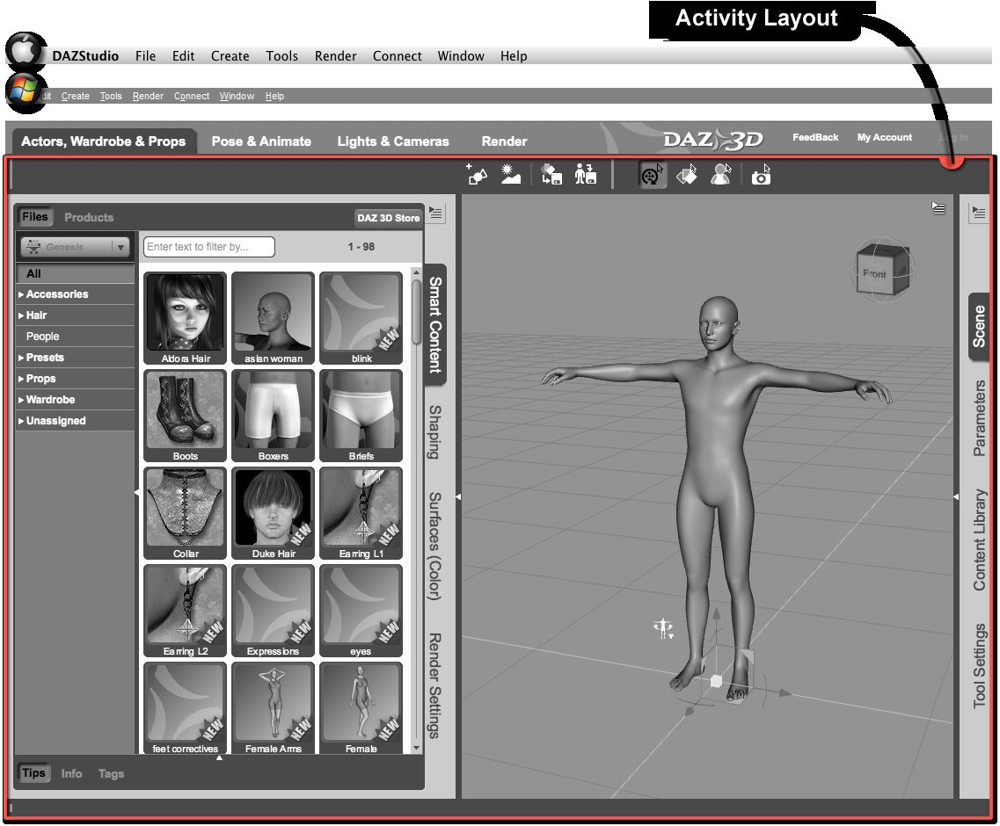
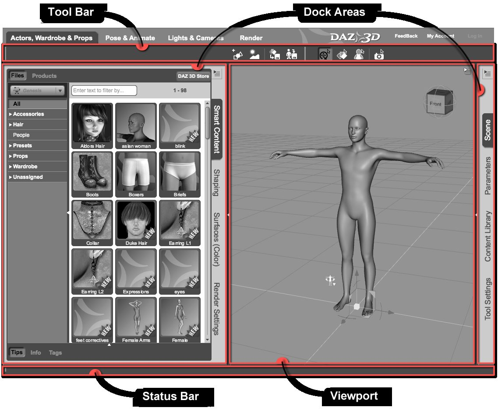
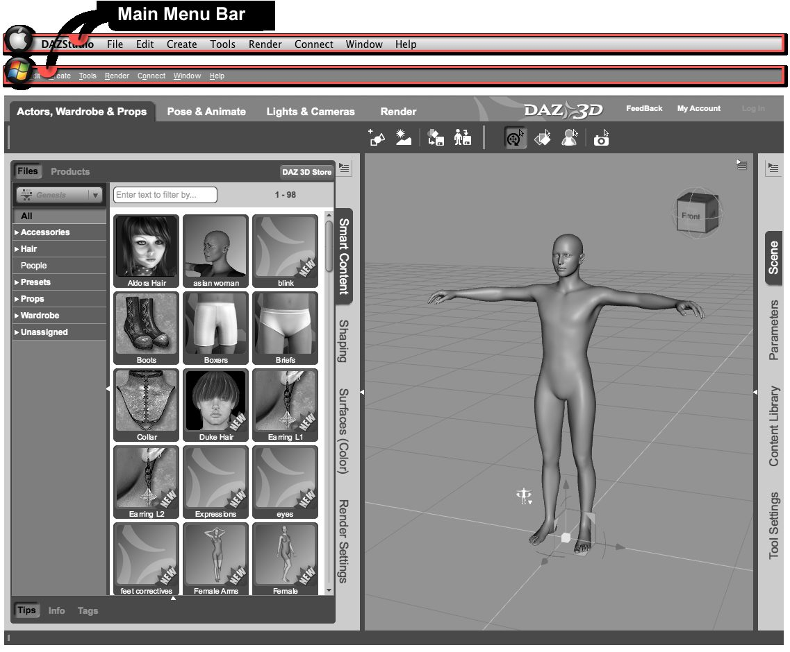
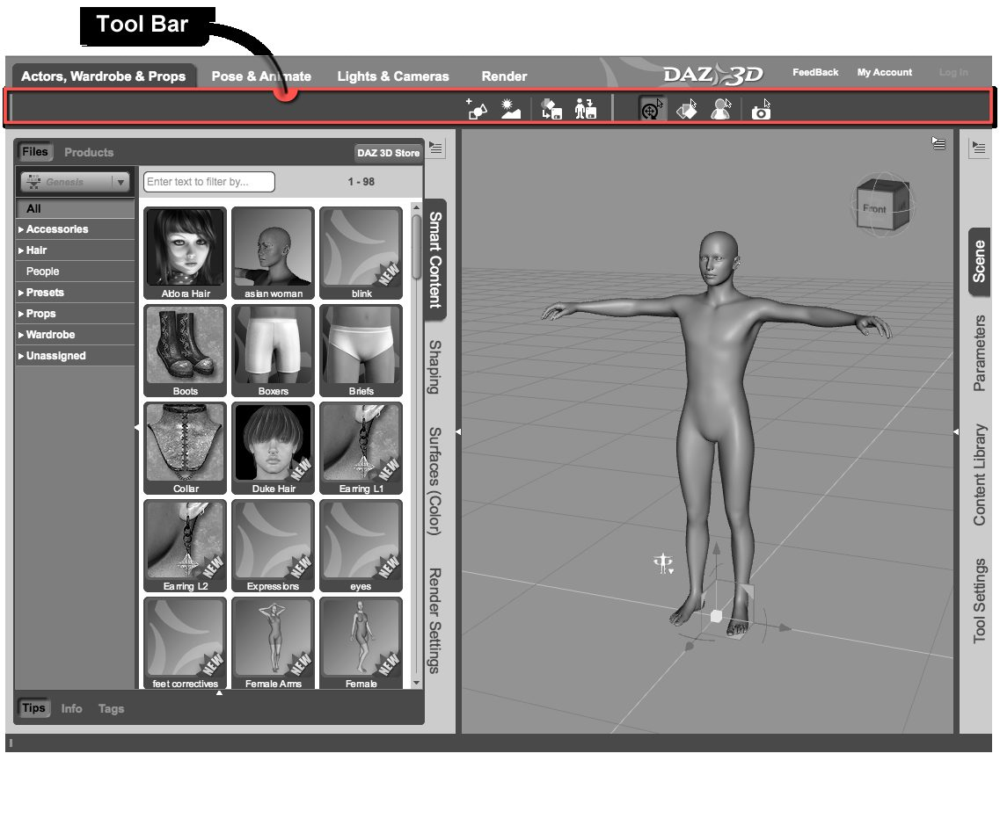
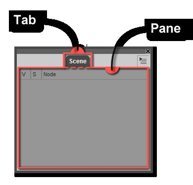

ចំណុចប្រទាក់អ្នកប្រើប្រាស់ (UI)
បកប្រែពី៖ User Interface (UI) — Reference Guide
ពិភព 3D ជាកន្លែងស្មុគស្មាញ — មានអ្វីដែលត្រូវដឹងច្រើន និងត្រូវរៀនច្រើនជាងនេះទៀត។ វាវិវឌ្ឍឥតឈប់ឈរ ជាមួយលទ្ធភាពបង្កើត និងបត់បែនថ្មីៗ ដែលទាំងអស់ត្រូវបង្ហាញ និងពន្យល់តាមរយៈចំណុចប្រទាក់ — ហើយបើអាច ចំណុចប្រទាក់ដែលមិនត្រឹមតែខ្លាំង ប៉ុន្តែថែមទាំងងាយស្រួល និងសប្បាយ។
ចំណុចប្រទាក់ Daz Studio 4.x ផ្ដល់ layouts និង styles ជាច្រើន ដែលមានគោលដៅរកតុល្យភាពរវាងភាពសប្បាយ ភាពងាយស្រួល និងអំណាច។ ការបម្រើអ្នកប្រើដែលមានចំណង់ចំណូលចិត្តចម្រុះត្រូវការភាពបត់បែនក្នុងការរចនា — ភាពបត់បែននេះហើយដែលអនុញ្ញាតឱ្យធាតុផ្សេងៗអាច ប្ដូរទំហំ ប្ដូរទីតាំង និងរៀបចំឡើងវិញ ដើម្បីសមនឹងលំហូរការងាររបស់អ្នក។ ប៉ុន្តែភាពបត់បែនក៏មានតម្លៃដែរ — វាបង្កើតភាពស្មុគស្មាញមួយចំនួនដែលលើសពីផ្នែក 3D នៃកម្មវិធី។
ផ្នែកនៃ Reference Guide នេះ «ស្រទាប់» ចំណុចប្រទាក់ម្ដងមួយជាន់ ដើម្បីផ្ដល់ព័ត៌មានដែលអ្នកត្រូវការ — ទោះប្រើ layouts លំនាំដើម ឬបត់បែន layout ផ្ទាល់ខ្លួន។
របៀបអានឯកសារ UI (ក្នុងឯកសារដើម)
ទំព័រនីមួយៗផ្ដល់ រូបភាពជាមួយចំណារ (annotation) ដែលបង្ហាញកម្រិតបច្ចុប្បន្ននៃចំណុចប្រទាក់។ កម្រិតនោះត្រូវបានពណ៌នានៅក្រោមរូបភាព រួចធាតុមេ (parent) និងធាតុកូន (child) នីមួយៗត្រូវបានពណ៌នាសង្ខេប ជាមួយតំណទៅព័ត៌មានលម្អិត។ លំនាំនេះធ្វើឡើងដដែលៗពេញផ្នែក UI នៃ Reference Guide។
ធាតុសំខាន់ៗនៃ Main Window
ខាងក្រោមជាបញ្ជីធាតុចំណុចប្រទាក់ដែលមានក្នុង Main Window របស់កម្មវិធី។ ធាតុទាំងនេះត្រូវបានបំពេញ និងរៀបចំតាម Layout៖
Activity Bar
ធាតុផ្ទុកសម្រាប់ធាតុចំណុចប្រទាក់ដែលអនុញ្ញាតឱ្យអ្នក ប្ដូររហ័ស រវាង layouts ផ្អែកលើ Activity និងផ្ដល់តំណងាយស្រួលទៅកាន់សេវាអនឡាញទូទៅរបស់ Daz 3D។
Activity Layout
ធាតុផ្ទុកសម្រាប់ធាតុចំណុចប្រទាក់ដែលអាច ប្ដូរទីតាំង ទំហំ ស្ថានភាព ភាពមើលឃើញ ជាដើម សម្រាប់ Activity ជាក់លាក់ណាមួយ។


Activity Layout — រូបភាពពីឯកសារផ្លូវការ DAZ 3D


ធាតុរងនៃ Activity Layout — រូបភាពពីឯកសារផ្លូវការ DAZ 3D
Toolbars និង Panes


Main Menu Bar — រូបភាពពីឯកសារផ្លូវការ DAZ 3D


Tool Bar — រូបភាពពីឯកសារផ្លូវការ DAZ 3D


រចនាសម្ព័ន្ធទូទៅនៃផ្ទាំង (Pane) មួយ — រូបភាពពីឯកសារផ្លូវការ DAZ 3D
Note
ឯកសារយោងដើម (English) មានទំព័រលម្អិតសម្រាប់ធាតុនីមួយៗ — Viewport, Panes (Scene, Smart Content, Content Library, Parameters, Surfaces, Shaping, Posing, Lights, Cameras, Render Settings...), Toolbars, Menus និង Actions ទាំងអស់។ សូមមើល User Interface (UI) — ឯកសារដើម។ សេចក្ដីសង្ខេបជាភាសាខ្មែរនៃផ្ទាំងសំខាន់ៗទាំង ៥ មានក្នុង ជំពូក ១។